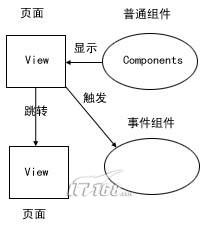

表现层框架Struts/Tapestry/JSF架构比较
Struts/Tapestry/JSF是目前J2EE表现层新老组合的框架技术。从诞生时间上看，Struts应该比较早，使用得非常广泛，Tapestry 3.0逐渐引起广泛的重视，正当Tapestry即将大显身手时期，SUN推出JSF标准技术，虽然JSF一开始推出尚不成熟，留出了一段空白期，但是随着JSF1.1标准推出，JSF开始正面出击，粉面隆重登场了。
其实，JSF和Tapestry也并不是那种头碰头的相同竞争性技术，两者还是各有侧重点的，不过比较细微，但是这种细微点在实现一个大工程时可能带来不同的感受和变化。
首先，我们从一个高度来抽象一下表现层框架应有的技术架构，下图可以说所有表现层框架技术都必须实现的功能架构图：

http://image.it168.com/cms/2006-6-23/image/066232310.jpg
当然，我们不必废话罗嗦MVC模式，MVC模式是基准模式，现在框架技术已经不必再拼是否是MVC模式了。 在上图MVC模式基础上，一个表现层框架无外乎要实现图中的三个功能：
我们通过下表来比较这 三种框架在实现上图各个功能时技术细节，从而得出他们的异同点和偏重点。
表格
Struts组件编程模型
Struts实现组件编程时有一些复杂：经常为一个页面中需要引入多个组件而头疼，因为Struts中无法直接引入多个组件，必须绕一些圈子：
一般分两种情况：如果同一个Action就可以对付这些组件，那么在这种情况下有两个办法：
这两个方法都有缺点： 第一种办法经常一个ActionForm弄得面目全非，变成一个大杂烩，违反了OO分派封装的原则；第2种办法其实又回到jsp编程；
第二种情况，如果这些组件必须有预先由不同的Action来处理，每个组件必须经过Action -->ActionForm流程，在这种情况下有两种办法：
Struts组件模型缺点
Struts组件编程必须限定在Action/ActionForm/JSP这三个框框中做文章，难度相对比较大，而Tapestry/JSF则没有太多这些技术框框限制，两者在组件编程方面更让编程者自由一些，方便一些，这也是组件型框架的优势吧。
Struts标签库
在Struts中，经常需要使用标签库来显示组件ActionForm中内容，这就涉及到一个结合的问题，标签库是别人写的，参考Struts的标签库用法，而组件是自己的，难度和麻烦就体现在这个结合点上。
JSF基本思路和Struts差不多，只不过换了不同标签库，也需要标签库+组件的结合思考，不过因为组件这里是通用组件，没有什么限制，所以这样比Struts要轻松一些。
Tapestry使用了组件库概念替代了标签库，没有标签库概念，这样就没有标签库和自己的组件需要结合的问题，都是组件的使用，组件中分Tapestry标准组件和自己定义的组件，这也是接触了Jsp体系的人学习Tapestry面临的一个思路转换。
具体以页面跳转为例子，页面跳转是靠链接<a href="目标"></a> 实现，链接是页面经常使用的元素。
Struts提供的html:link在频繁使用就特别不方便，尤其在传递多个参数时：其中html:link的page值，是跳转对方页面或Action的path，这个path一般需要到struts-config.xml查找Action的相应path,一旦配置文件path值修改，涉及到这个所有相关页面都要修改。
JSF将链接概念划分两个方面：导航性质和事件激活，在导航方面还是需要到配置faces-config查询Navigation的from-outcome的值。
由于Tapestry没有标签库概念，只有组件或页面两个概念，因此，链接跳转目标要么是组件，要么是页面，简洁简单，它没有多余的path概念，就是组件名，也就是对象名称，组件名称和path名称合二为一。
总结
JSF在很大程度上类似Struts，而不是类似Tapestry，可以说是一种Struts 2.0，都是采取标签库+组件的形式，只是JSF的组件概念没有象Struts那样必须继承ActionForm的限制；JSF在事件粒度上要细腻，不象Struts那样，一个表单一个事件，JSF可以细化到表单中的每个字段上。
JSF只有在组件和事件机制这个概念上类似Tapestry，但是不似Tapestry那样是一个完全组件的框架，所以，如果你做一个对页面要求灵活度相当高的系统，选用Tapestry是第一考虑。
Struts/JSF则适合在一般的数据页面录入的系统中，对于Struts和JSF的选用，我目前个人观点是：如果你是一个新的系统，可以直接从JSF开始；如果你已经使用Struts，不必转换，如果需要切换，可以将JSF和Tapestry一起考虑。
另外，JSF/Tapestry不只是支持Html，也支持多种客户端语言如WML或XUI等。
这三者之间关系：如果说Struts是左派；那Tapestry则是右派；而JSF则是中间派，中庸主义是SUN联盟的一贯策略。
当然，你也可以发表你在实践中这三者任何一个的使用感受，以使得后来者有一个比较。